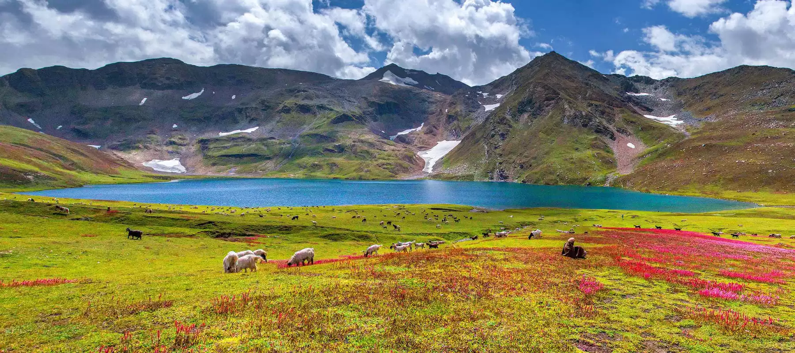

Introduction
Deosai National Park, located in Gilgit-Baltistan, is a high-altitude alpine plain and national park. It is known as the "Land of Giants" due to its massive scale and silence. With an average elevation of 4,114 meters (13,497 ft) above sea level, it is the second-highest plateau in the world after the Changtang Tibetan Plateau. Established in 1993, its primary purpose was to protect the survival of the Himalayan Brown Bear.
Landscapes & Ecosystems
The landscape of Deosai is characterized by rolling green plains, crystal clear streams, and a backdrop of snow-capped peaks. For most of the year, the plateau is covered in snow. However, during the brief summer (July to September), it transforms into a lush green meadow filled with millions of wildflowers and butterflies. Sheosar Lake, located within the park, is one of the highest lakes in the world and offers breathtaking views.
Biodiversity And Wildlife
Deosai is the last stable sanctuary for the Himalayan Brown Bear in Pakistan. Apart from the bears, the park is home to the Himalayan Ibex, Red Fox, Golden Marmot, Gray Wolf, and the Snow Leopard. The park is also a rich breeding ground for birds, including the Golden Eagle, Lammergeier, and Griffon Vulture.
Location On Map
Conservation Efforts
The park was established specifically to protect the Himalayan Brown Bear, which was on the brink of extinction in the region due to poaching and habitat loss. Since the park's creation and strict monitoring, the bear population has seen a significant increase. The park is accessible only during the summer months to minimize human impact on the fragile ecosystem.